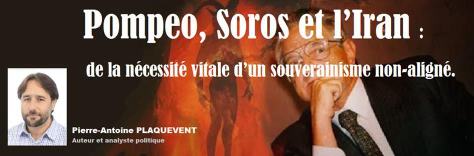
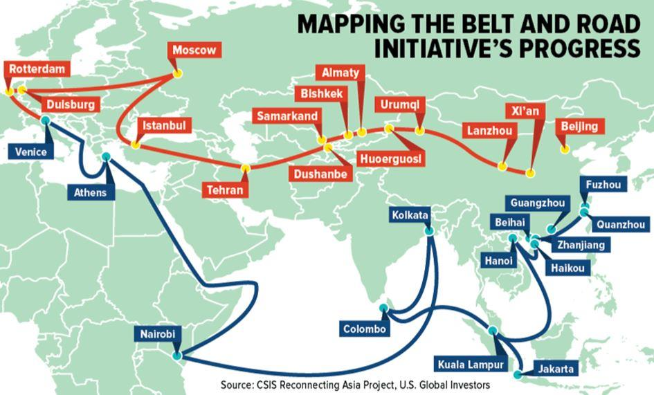

Pompeo, Soros et l’Iran : de la nécessité vitale d’un souverainisme non-aligné
par Pierre-Antoine PLAQUEVENT

Beaucoup s’étonnent de l’actuelle montée aux extrêmes de l’administration Trump sur la question iranienne. Malheureusement celle-ci n’est pas surprenante, elle est en fait très cohérente avec les prises de positions régulières du secrétaire d’État américain, Michael R. Pompeo. Celui-ci multiplie les allusions et les références guerrières issues de l’Ancien Testament, allant jusqu’à comparer Donald Trump à une nouvelle Esther venu délivrer le peuple juif de Haman, ce Vizir de l’Empire perse, ennemi antique des juifs. Une figure qui renvoie dans la longue mémoire juive à l’Iran actuel [1] et qu’évoquera à son tour Benjamin Netanyahu lors d’une déclaration conjointe avec Pompeo en mars 2019 : « Nous célébrons Pourim, quand, il y a 2500 ans, d’autres Perses, menés par Haman, ont tenté de détruire le peuple Juif. Ils ont échoué ; et aujourd’hui, 2 500 ans plus tard, une nouvelle fois, les Perses dirigés par Khamenei tentent de détruire le peuple Juif et l’État Juif. »[2]
Michael R. Pompeo fût aussi le premier secrétaire d’État américain à visiter la vieille ville de Jérusalem en compagnie d’un haut responsable politique israélien. Une visite historique qui constituait une reconnaissance tacite de la souveraineté israélienne sur le site du mont du Temple et de l’esplanade des Mosquées. Durant cette visite Pompeo, accompagné du Premier ministre Benjamin Netanyahu et de l’ambassadeur américain en Israël David Friedman, visita l’endroit supposé du sanctuaire du Temple de Jérusalem. Là ils purent observer ensemble « une reconstitution en réalité virtuelle du temple juif qui surmontait autrefois le mont du Temple » ainsi qu’une maquette très détaillée du futur temple présentée par l’Institut du Temple (The Temple Institute). [3]
Dans une étude à paraître prochainement, j’expose en détail l’influence des courants millénaristes évangélistes philo-sionistes sur l’administration Trump et le rôle qu’exerce Mike Pompeo en ce sens. Des courants qui viennent empêcher les promesses d’isolationnisme et de réalisme politique de l’administration Trump et qui poussent celle-ci à la guerre avec l’Iran au nom d’interprétations littéralistes de l’Ancien Testament. Des sectes protestantes pour qui la reconstruction du Temple de Jérusalem joue un rôle central dans leur vision du monde et leur idéologie.
La ligne de l’administration Trump est en fait assez claire : elle est néo-occidentaliste géopolitiquement et judéo-chrétienne sur le plan théopolitique. Elle s’oppose au globalisme sorosien quand celui-ci veut faire de l’Occident une société ouverte intégrale et dissoudre les États-Unis et ses vassaux dans un magma post-national mais elle s’oppose tout autant aux puissances géopolitiques qu’elles qualifient de révisionnistes quand celles-ci menacent l’unipolarité et l’hégémonie américaine. Cette confrontation droite Trumpienne / gauche sorosienne se double aussi d’une fracture toujours plus béante entre gauche juive globaliste et droite juive sioniste au sein du judaïsme politique international. Pour les occidentalistes judéo-chrétiens, Israël est un centre théopolitique majeur de l’Occident, peut-être plus que le Vatican. Un Vatican qui, avec le Pape François, a de toute façon choisi une orientation sorosienne et onusienne opposée à la ligne de déconstruction des institutions internationales défendue par l’administration Trump.
Cet occidentalisme américano-centré attaque ainsi frontalement les institutions internationales comme l’ONU et l’UE accusées d’être trop bureaucratiques, incapacitantes et surtout anti-occidentales. Comme en témoignent les déclarations de Michael R. Pompeo en 2018 dans une allocution intitulée « Rétablir le rôle de l’Etat-nation dans l’ordre libéral international » [4] :
« Certaines nations considèrent les traités relatifs au climat de l’ONU comme un simple moyen de redistribuer la richesse. Le parti pris anti-israélien a été institutionnalisé. Les puissances régionales s’entendent pour voter en faveur du siège de pays tels que Cuba et le Venezuela au Conseil des droits de l’homme. À sa création, l’ONU se voulait une organisation vouée à l’accueil des pays épris de paix. La question que je pose est la suivante : aujourd’hui, continue-t-elle à remplir fidèlement sa mission ? »
Durant cette intervention Michael R. Pompeo synthétisait le projet de réorientation du système des relations internationales conduit par l’administration Trump :
« Dans les plus belles traditions de notre grande démocratie, nous rassemblons les nations pour construire un nouvel ordre libéral capable de prévenir la guerre et d’assurer une plus grande prospérité »
Un « nouvel ordre libéral » trumpien lié à l’agenda de la droite religieuse israélienne et qui veut supplanter le « nouvel ordre mondial » des globalistes sorosiens. Mais la contradiction est ici flagrante : comment « Rétablir le rôle de l’Etat-nation dans l’ordre libéral international » comme le propose Pompeo et agir ensuite comme viennent de le faire les États-Unis en Irak ? C’est sur cette faille majeure de la doctrine Pompeo que pourra s’appuyer le think tank de Soros et Koch afin de siphonner l’opinion isolationniste américaine vers le candidat démocrate.
Lors du dernier forum de Chișinău en Moldavie en septembre dernier, je rappelais les aspects positifs du « Trumpisme » quand celui-ci se confronte au globalisme sorosien mais aussi ses aspects plus que problématiques au niveau des relations internationales pour les intérêts européens. Sur le plan des valeurs et d’une certaine volonté de freiner la culture de mort mondialiste, le pan-conservatisme trumpien et ses alliés souverainistes actuels apparaissent comme une bonne orientation mais au niveau de la politique étrangère, avec le parasitage permanent du sionisme religieux dur, cette orientation s’avère catastrophique pour nos intérêts géostratégiques au Moyen-Orient et en Eurasie.
L’Europe n’a pas à choisir entre un néo-occidentalisme brutal qui veut la vassaliser et la couper de ses intérêts vitaux en Eurasie et un globalisme sorosien délétère qui veut réaliser un nouvel ordre mondial post-national sur les ruines de la civilisation occidentale. L’élaboration d’une orientation géostratégique autonome pour les nations européennes est aujourd’hui impérative afin de traverser la zone de turbulences qui s’ouvre en ce début d’année 2020.
Encore faudra-t-il ensuite un personnel politique européen apte à l’incarner et l’actualiser avec le courage et la volonté de puissance nécessaire. Il s’agit de savoir si nous voulons être objet ou sujet de notre histoire future.
Je publie ci-dessous la dernière partie de la conférence de septembre 2019 car elle me semble donner des clefs de compréhension pour appréhender l’accélération en cours.
La société ouverte et les fractures géopolitiques contemporaines
Face au projet globalitaire d’une société ouverte transnationale, on observe une lutte toujours plus affirmée au sein du monde occidental entre globalistes sorosiens (type Merkel-Macron et autre Trudeau) et une tendance que je qualifierais de néo-occidentaliste (type Trump-Orban-Salvini). Cette ligne de fracture entre globalistes et néo-occidentalistes traverse tout l’Occident et s’avère déterminante quant à l’avenir du système des relations internationales. Irons-nous vers plus d’intégration globaliste ou bien l’anglosphère et ses alliés vont-ils faire bloc pour contrer une alliance stratégique eurasiatique et l’émergence d’un monde post-occidental ?
Pour avoir les mains libres dans la guerre géo-économique qui se joue entre l’empire américain et ses rivaux stratégiques eurasiatiques, il devient urgent pour les néo-occidentalistes de contenir l’influence interne à l’Occident que possèdent les réseaux Soros et à la limite de les laisser agir à l’étranger. C’est-à-dire là où ils peuvent être utiles pour aller chatouiller les géants terrestres que sont la Chine et la Russie sur leurs marches. Comme à Hong-Kong, en Ukraine, en Géorgie, en Arménie et partout ailleurs sur ces verrous-pivots du « Rimland » qui ceinturent l’« Heartland » eurasiatique. Les néo-occidentalistes (qui ne sont pas exactement les néo-conservateurs de l’époque de Bush) convergent parfois avec les sionistes de droite afin de contrer les liens qu’entretiennent les réseaux Soros et la gauche israélienne type Ehud Barak mais ils peuvent aussi diverger comme l’illustre l’éviction plus récente d’un John Bolton. A ces hauteurs du pouvoir politique occidental le vent souffle très fort et change très vite de direction …
L’affaire Epstein fût un bon indicateur de cette friction entre une gauche « sorosienne » globaliste et une droite néo-occidentaliste philo-sioniste. Dès 2015, Trump avait ainsi attaqué Bill Clinton sur sa fréquentation assidue de Jeffrey Epstein et de ses « prestations ». Dès qu’Epstein fût suspecté de détournements de mineures, Donald Trump se rapprocha ainsi de Bradley Edwards, l’avocat des jeunes victimes. Bradley Edwards affirma même que Trump fût le seul « people » à avoir agi de la sorte et que sa collaboration lui fût précieuse.
On connait par ailleurs la proximité d’Epstein avec Ehud Barak, proximité qui a été révélé par les photos du Daily Mail où l’on peut voir Ehud Barak « entrant dans la résidence de Jeffrey Epstein à New York en 2016, le visage partiellement caché, et d’autres de jeunes femmes pénétrant le même jour dans la résidence. » Ehud Barak qui annonçait fin juin 2019 « la fin de l’ère Netanyahu », se retrouvait ainsi propulsé comme amateur de filles mineures en pleine une du Daily Mail, le deuxième quotidien britannique en nombre de ventes. Ceci en pleine période de tensions sur le Brexit. Brexit soutenu par l’administration Trump contre les euro-globalistes sorosiens. Ehud Barak est par ailleurs régulièrement accusé par la droite israélienne d’être soutenu par Soros et ses relais israéliens. Netanyahu fût ainsi le premier ravi des révélations sordides sur Ehud Barak. Révélations qui survinrent peu avant les récentes élections législatives israéliennes et qui s’annonçaient difficiles pour le Likoud.
On voit ici un axe Trump-Netanyahu se confronter à une gauche internationale Clinton-Epstein-Barak-Soros. Et ça n’est que le point le plus saillant de cette confrontation, car sur les questions de société les plus clivantes comme l’avortement, le communautarisme LGBT ou l’identité nationale, ces deux orientations du monde occidental se font face et divergent régulièrement.
A la fin de mon étude sur les réseaux soros je parlais d’une « unité et scission au sein du judaïsme politique », cette ligne de tension n’a fait que s’accroitre depuis. Le très influent néo-conservateur Daniel Pipes va jusqu’à parler d’une « opposition frontale entre l’Etat d’Israël et l’establishment juif européen ». Daniel Pipes accuse ainsi la gauche juive de la diaspora de refuser l’alliance que devraient faire les juifs avec les conservateurs et les populistes occidentaux ; alliance qui permettrait de contrer les ennemis d’Israël et de l’Occident que sont la gauche et l’Islam. C’est la ligne de dénonciation de l’« Islamo-gauchisme » que suivent en France les Golnadel, Elizabeth Levy, Ivan Rioufol, Eric Zemmour etc ou des médias comme la revue l’Incorrect. C’est une stratégie qui vise à pousser les nations européennes vers une alliance judéo-occidentale américano-centrée face au cosmopolitisme sorosien.
C’est une tendance géopolitique qui a toujours existé aux Etats-Unis où dès les années cinquante, Robert Strausz-Hupé (d’ascendance juive et huguenote) créait l’Institut de recherche en politique étrangère (Foreign Policy Reseach Institute – FPRI), un influent centre de formation géopolitique qui visait à réarmer conceptuellement l’Amérique dans le contexte de la guerre froide.
Robert Strausz fût en quelque sorte le père géopolitique du néo-conservatisme, il théorisait l’idée d’une Europe décadente qui devait être sauvée des griffes de l’Asie russe, chinoise et arabe. Pour ce faire, l’Europe devait être gérée comme une province d’un empire américain comparable au rôle que tenait l’Empire romain pour les cités grecques face à l’empire perse asiatique. Il théorisait aussi l’idée d’un empire universel américain, éclaireur armé de la démocratie mondiale. Une idée qui sera reprise par les néo-conservateurs du Project for the New American Century (Projet pour le Nouveau Siècle Américain, PNAC) à la fin des années 1990.
Les néo-occidentalistes comme Trump (ou son ancien conseiller Bannon) sont plus réalistes, moins idéalistes et donc moins interventionnistes que les néo-conservateurs. L’idée d’un empire américain universel les intéresse moins que d’empêcher l’éclatement des Etats-Unis sous le poids de leurs contradictions internes tout en maintenant une influence américaine assez forte pour contrer la montée de la Chine afin de rester en tête du système des relations internationales au XXIème siècle.
Mais Trump ne tient pas l’ensemble de la structure du pouvoir américain, aussi les tendances globalistes ou sionistes durs (qui se confrontent entre elles) poussent les Etats-Unis vers leurs agendas respectifs et empêchent Trump de réaliser pleinement ses promesses électorales d’un retour à un isolationnisme modéré.
Comme on le voit, le système géopolitique international est partagé entre différentes tendances lourdes qui cherchent chacune à imposer leurs orientations géopolitiques, idéologiques et sociales.
On pourrait décliner ces tendances ainsi :
1/ Un pan-conservatisme néo-occidentaliste promu par l’administration Trump et ses alliés en Europe, en Grande-Bretagne et par la droite israélienne. Ce pan-conservatisme veut ménager la Russie face à la Chine mais empêcher une convergence stratégique UE / Russie. C’est d’une certaine manière la pensée de Samuel Huntington qui est ici réactualisée. Des commentateurs superficiels ont ainsi beaucoup ri de l’intention de Trump de racheter le territoire du Groenland mais en plus d’être une tête de pont stratégique sur l’Océan Arctique face à la Russie et l’Eurasie, il faut se souvenir que la carte du monde que proposait Samuel P. Huntington dans son livre « Le Choc des civilisations » incluait précisément le Groenland et les pays scandinaves comme faisant partie de la civilisation chrétienne occidentale dans son classement des civilisations mondiales.
2/ Un européisme globaliste « sorosien » pur jus, dont le centre de gravité politique est actuellement incarné par le couple Macron-Merkel. D’où le traité d’Aix-la-Chapelle (traité sur la coopération et l’intégration franco-allemandes) signé par Macron et Merkel cette année. Ce traité vise à accélérer la constitution d’un pôle continental globaliste intégré et d’un plan B pour l’UE face aux risques d’émiettement ou même un simple changement d’orientation de l’UE que peut favoriser la montée des souverainismes en Europe.
3/ Une intégration géo-économique eurasiatique dont le moteur principal est la Chine et sa volonté de réaliser le projet grand-continental des « nouvelles routes de la soie ». Rappelons que le projet des nouvelles routes de la soie appelé officiellement « One Belt, One Road » (OBOR) a pour ambition de s’étendre du Pacifique jusqu’à la mer Baltique et qu’il vise en plus de la Chine, « 64 pays asiatiques, moyen-orientaux, africains et d’Europe centrale et orientale ». Avec un budget de 800 à 1 000 milliards de dollars (cinq à six fois le budget du plan Marshall), ce projet pourrait permettre à la Chine de réaliser ce qui constitue la grande crainte des géopoliticiens anglo-saxons depuis toujours : l’intégration économique du continent eurasiatique dans son ensemble à l’horizon 2049, date anniversaire de la fondation de la République Populaire de Chine. Une intégration économique qui déplacerait le centre des affaires mondiales de l’Occident vers l’Eurasie mais une Eurasie pilotée par la Chine et non pas par l’Europe et la Russie.

Pour une quatrième orientation géostratégique européenne
Il faut être réaliste, dans chacune des trois options que je viens d’énoncer, ceux que j’appelle les peuples « natifs-européens » ont plus un destin d’objets que de sujets politiques. La situation actuelle est très périlleuse pour nos peuples sur tous les plans : démographique, économique, sécuritaire, culturel, civilisationnel, religieux etc.
Sur le plan des valeurs et d’une certaine volonté de freiner la culture de mort mondialiste, le pan-conservatisme et ses alliés souverainistes apparaissent comme la meilleure de ces trois orientations mais au niveau de la politique étrangère, avec le parasitage permanent du sionisme religieux dur, cette orientation s’avère problématique pour nos intérêts géostratégiques au Moyen-Orient et en Eurasie.
Quant à l’Européisme des Macron, Attali, Soros, Merkel, il ne vise pas à la constitution d’une confédération des États-nations européens dans le but d’accéder à un niveau de puissance géopolitique supérieure mais bien à la création d’un espace politique et d’un « démos » pan-européens qui remplaceraient à terme les nations historiques européennes dans le cadre d’une gouvernance globale. Ce prétendu souverainisme européen bute sur une aporie : comment concilier un quelconque souverainisme continental avec l’impératif catégorique kantien d’une Europe région-monde d’une gouvernance mondiale intégrée ? Cet européisme est avant tout un cosmopolitisme maquillé par des promesses de souveraineté européenne qui ne se réalisent jamais.
Pire, cet euro-globalisme qui se veut universel ne l’est pas pour les puissances extérieures à l’Occident. Puissances qui sont en droit de refuser l’impératif catégorique sorosien d’une gouvernance mondiale et de le considérer comme un nouvel avatar du colonialisme occidental. Surtout, cet euro-globalisme désarme l’Europe dans la course normale des affaires du monde pour la préservation, le maintien voire l’extension de nos intérêts dans la lutte permanente qui opposent les puissances géopolitiques entre elles. Cet euro-globalisme n’est pas universel et ne constitue qu’une orientation géostratégique parmi d’autres mais une orientation qui pourrait s’avérer à terme fatal pour l’Europe dans son ensemble.
En tant que Français et qu’Européens, la vision, la boussole géopolitique qui devrait actuellement continuer de nous guider me semble être cette idée toujours neuve et actualisable d’un axe Paris-Berlin-Moscou (ou Moscou-Berlin-Paris) et d’une entente stratégique continentale entre souverainistes non-alignés. C’est la seule option géopolitique et civilisationnelle capable de faire pièce en premier lieu à l’euro-globalisme et à l’Union-Européenne mortifère des Soros/Macron/Merkel mais aussi de contenir l’anglosphère néo-occidentaliste et la montée de la Chine. Entre la bête de la mer et la bête de la terre, entre Léviathan et Béhémoth, ce serait bien de ne pas avoir à choisir notre prochain maître …
Seule une volonté de puissance et de coopération euro-russe (eurussienne) pourrait empêcher soit notre servitude prochaine, soit la diffusion universelle de la guerre civile mondiale. Seule une volonté de puissance et de coopération euro-russe pourrait empêcher l’écartèlement des peuples romano-germaniques et touraniens dans la guerre géo-économique mondiale entre néo-occidentalisme, néo-asiatisme et globalisme post-national. Sur cette voie, la Moldavie constitue une clef de voute de cette architecture géopolitique ambitieuse mais vitale pour l’avenir de nos peuples et de notre descendance.
Partager cette page